本文以一个可复现的演示库为对象，按顺序执行 bkagent 的最小闭环：探测实例、登记资产、产出备份、校验恢复点、通过门禁恢复、查看台账与告警。每一步都给出实际执行的命令与真实输出，并说明这一步为什么必须存在。
适合两类读者：首次接触本项目、需要在本机完成端到端验证的 DBA；以及评估该链路是否满足生产要求的评审者。命令参数、门禁细则与全部 36 条命令的参考手册见 usage.md，设计原理见 architecture.md；本教程只覆盖主线与常见分支。
源码仓库：RoyDD/backup-agent。本教程的 Markdown 源文件为 docs/tutorial.md，单页版为 docs/tutorial.html；文中提到的命令、脚本与插件均可在该仓库对应路径下查阅。
本教程的输出取自本地演练环境（PostgreSQL 16.15、控制库为临时目录下的 SQLite 文件），其中的 id、时间戳、大小与临时库名随环境变化，字段名与命令不变。截图里的产物路径位于演练临时目录，正文命令统一用 /var/backups 表示常规落地位置。
01准备环境
1.1安装与构建
pnpm install
pnpm build:cli # 产出 dist/bkagent.mjs 与 dist/migrations开发态可改用 pnpm bkagent <command>，由 tsx 直接从源码执行，参数与构建产物完全一致。后文命令统一写作 bkagent，指二者之一。
环境要求：Node.js ≥ 22.5（依赖 node:sqlite，运行时的 ExperimentalWarning: SQLite 属预期）、pnpm 11.24、目标 PostgreSQL 14–17 且 psql / pg_dump 可用。
1.2准备一个可以备份的库
本文假定目标实例已有业务库；若不存在，可执行下列脚本创建 bk_tut（三张表、一个索引、200 条客户记录、800 条订单记录）。
createdb -h 127.0.0.1 -p 5432 -U postgres bk_tut（下面命令按 5432 举例；本文截图取自 55416 的本地演练实例，端口按自己的实例替换。）
CREATE TABLE customers (
id bigserial PRIMARY KEY, email text NOT NULL UNIQUE,
region text NOT NULL, created_at timestamptz NOT NULL DEFAULT now()
);
CREATE TABLE orders (
id bigserial PRIMARY KEY,
customer_id bigint NOT NULL REFERENCES customers(id),
status text NOT NULL, total_cents bigint NOT NULL CHECK (total_cents >= 0),
created_at timestamptz NOT NULL DEFAULT now()
);
CREATE INDEX orders_customer_idx ON orders (customer_id, created_at DESC);
CREATE TABLE order_items (
order_id bigint NOT NULL REFERENCES orders(id) ON DELETE CASCADE,
sku text NOT NULL, qty int NOT NULL CHECK (qty > 0), price_cents bigint NOT NULL,
PRIMARY KEY (order_id, sku)
);
INSERT INTO customers (email, region)
SELECT 'user' || i || '@example.com', (ARRAY['apac','emea','amer'])[1 + i % 3]
FROM generate_series(1, 200) AS i;
INSERT INTO orders (customer_id, status, total_cents)
SELECT 1 + (i % 200), (ARRAY['paid','pending','refunded'])[1 + i % 3], 1000 + i * 7
FROM generate_series(1, 800) AS i;
INSERT INTO order_items (order_id, sku, qty, price_cents)
SELECT o.id, 'SKU-' || (1 + (o.id % 40)), 1 + (o.id % 3), 500 + o.id FROM orders AS o;
ANALYZE;1.3三个入口参数
| 变量 / 参数 | 缺省值 | 作用 |
|---|---|---|
--dsn 或 BKAGENT_DSN | 无（必填） | 目标实例连接串，postgres://<user>@<host>:<port>/<db> |
--db 或 BKAGENT_DB | .bkagent/control.db | 控制库路径，首次使用时自动执行迁移 |
BKAGENT_MIGRATIONS | 包内 dist/migrations | 单文件安装时迁移目录缺失，会以 no such table 报错，用它指回迁移目录 |
密码不要写进 argv：用 .pgpass、peer 认证或 PGPASSWORD 环境变量。核心会把连接串里的密码放进子进程环境变量，不会写进 Plan、日志或指标标签。
1.4一次操作在控制库里留下什么
inspect、providers 不写控制库；backup 写 Plan/Attempt/Artifact；verify 把校验等级升级到 V2；restore 读 Asset 与 Approval 做门禁。退出码含义：0 成功、1 执行失败、2 用法错误或门禁拒绝、3 连接失败、4 plan/probe 失败。
02第 1 步：inspect —— 先确认在对谁操作
export BKAGENT_DSN='postgres://postgres@127.0.0.1:55416/bk_tut'
bkagent inspect --format text
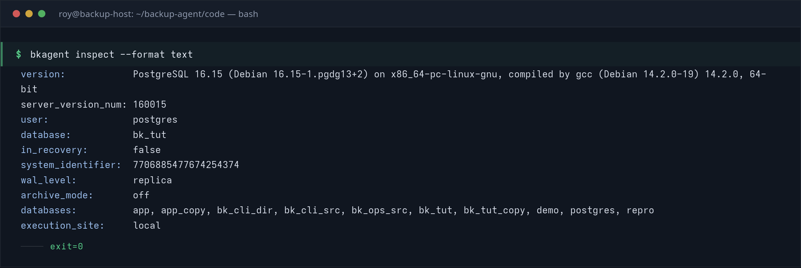
下列字段的用途超出「确认版本」本身：
| 字段 | 为什么关心 |
|---|---|
version / server_version_num | 决定可用的备份方式与参数，也用于判断目标是否在支持矩阵（14–17）内 |
system_identifier | 实例身份。计划指纹绑定它，换实例（重建、主备切换）会让既有计划指纹失配 |
in_recovery | 备库为 true；在备库上做物理备份与 PITR 的前提不同 |
wal_level / archive_mode | 逻辑备份不需要；物理备份、PITR、WAL-G 链路分别要求 replica/logical 与开启归档 |
execution_site | local 表示在本机 spawn；远端执行时显示 ssh: / kubectl: 前缀 |
databases | 同实例上有哪些库，写 --database 时不要写错 |
请全程统一写 127.0.0.1：接下来登记的资产 targetId 必须与计划算出的字符串完全一致，主机名写法不同会被当成两个目标。
03第 2 步：asset-set —— 给目标建档
资产（Asset）是目标的业务属性：环境、负责人、关键级别、数据分级、RPO、RTO。它不是可选的备注，而是三件事的输入：恢复门禁判断是否属于生产、watchdog 判断告警等级、asset-rpo 判断恢复点是否过期。
bkagent asset-set --target 127.0.0.1:55416/bk_tut --engine postgres \
--environment production --owner dba --criticality high \
--data-classification internal --rpo-minutes 1440 --rto-minutes 240
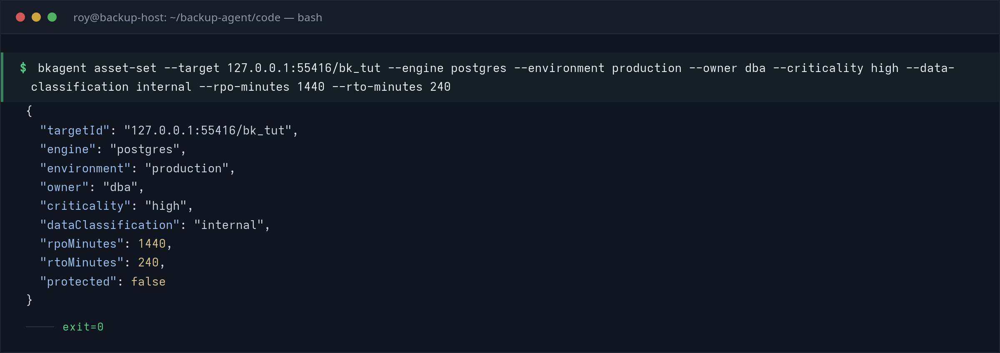
targetId 不是自由文本，由 <host>:<port>/<database> 三段拼成，必须与计划计算结果逐字符相同：
三个容易错的地方：
- 用
localhost登记、用127.0.0.1备份，会被算成两个目标。 - 恢复时
--database是目标库名，与备份来源库名不同，targetId也随之改变；换库名恢复要为新库单独登记。 - 已存在的资产要「变宽松」（降低关键级别、去掉
--protected、改环境）时，必须再加--yes --principal <id>，否则被拒。
04第 3 步：providers —— 确认可用链路
bkagent providers --format text
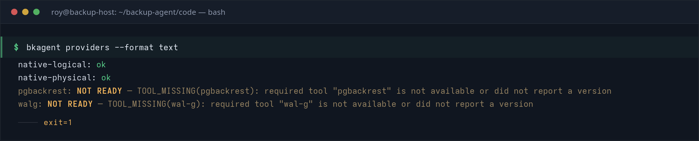
native-logical: ok
native-physical: ok
pgbackrest: NOT READY — TOOL_MISSING(pgbackrest): required tool "pgbackrest" is not available or did not report a version
walg: NOT READY — TOOL_MISSING(wal-g): required tool "wal-g" is not available or did not report a version这段输出需要正确解读，否则会误判为故障：
- 本机未安装
pgbackrest与wal-g，因此两条链路为NOT READY，命令以退出码1结束。这是能力协商（capability negotiation）失败关闭：未声明的能力会明确报错，不会静默降级成pg_dump。 native-logical、native-physical为ok，只说明pg_dump/pg_basebackup可用，不代表版本匹配已通过；真正的版本与参数校验在执行时按计划逐步进行。- 只关心逻辑备份时，这两行
NOT READY可以忽略；但只要计划里出现pgbackrest-*/walg-*步骤，就必须先让对应工具出现在PATH上（或显式传--walg <bin>）。
05第 4 步：backup —— 产出第一个恢复点
bkagent backup --database bk_tut --out /var/backups/bk_tut.dump --format custom
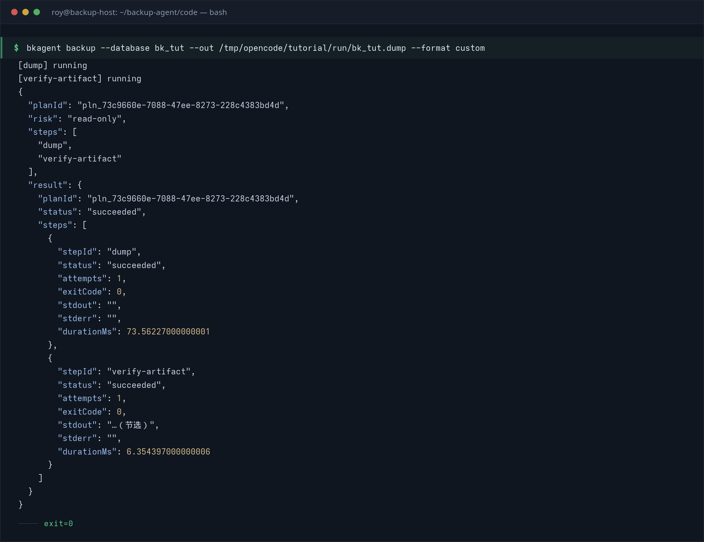
[dump] running
[verify-artifact] running
{
"planId": "pln_73c9660e-7088-47ee-8273-228c4383bd4d",
"risk": "read-only",
"steps": ["dump", "verify-artifact"],
"result": {
"planId": "pln_73c9660e-7088-47ee-8273-228c4383bd4d",
"status": "succeeded",
...要点：
- 一次逻辑备份是两个步骤：
dump与verify-artifact。第二步用pg_restore -l读取目录（TOC），解析成功即说明归档文件完整，产物记为 V1（包含大小与 SHA256 摘要）。 risk是read-only：备份不修改目标数据，因此不需要--yes、不需要资产、不需要审批。- 产物默认落在
--out指定路径；--storage-kind fs|nfs|s3可让核心上传后再登记，--remove-local删除本地副本。凭据同样只走环境变量（BKAGENT_S3_*）。 - 常用变体：
--format directory --jobs 4（并行、可按表恢复）、--format plain（纯 SQL，便于人工查看）、--mode physical（pg_basebackup，需要replication权限与wal_level=replica）。
06第 5 步：verify —— 把 V1 升级为 V2
V1 仅证明归档文件可写出。要证明备份可恢复且数据一致，必须实际执行一次恢复：
bkagent verify --input /var/backups/bk_tut.dump --database bk_tut
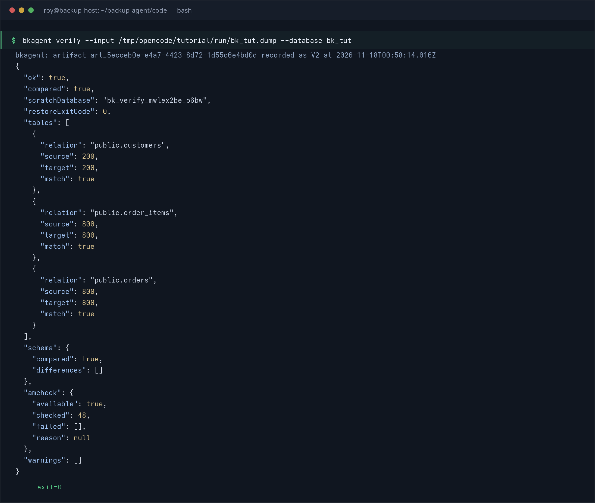
{
"ok": true,
"compared": true,
"scratchDatabase": "bk_verify_mwlex2be_o6bw",
"restoreExitCode": 0,
"tables": [
{ "relation": "public.customers", "source": 200, "target": 200, "match": true },
{ "relation": "public.order_items", "source": 800, "target": 800, "match": true },
{ "relation": "public.orders", "source": 800, "target": 800, "match": true }
],
"schema": { "compared": true, "differences": [] },
"amcheck": { "available": true, "checked": 48, "failed": [], "reason": null },
"warnings": []
}校验等级决定「该恢复点是否可用」：
| 等级 | 含义 | 写入者 |
|---|---|---|
| V0 | 产物存在且命令成功 | backup（物理备份的 pg_verifybackup 计划内校验） |
| V1 | 已记录大小与内容摘要 | backup |
| V2 | 恢复到临时库后比对行数、schema 与 amcheck | verify 实际执行通过 |
| V3 | 业务冒烟 SQL 断言 | 尚未实现（用例集缺失） |
等级不能靠声明获得：artifact-add --verified-level V2 必须同时给出 64 位十六进制 --checksum；verify 仅在完整执行比对后才写回 V2。--keep-scratch 保留临时库用于排查，默认删除。
07第 6 步：查看台账
bkagent catalog
bkagent asset-rpo
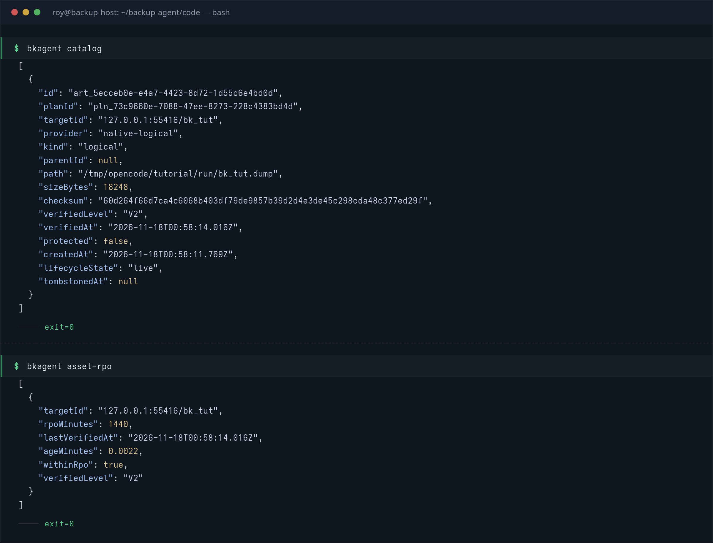
[
{
"id": "art_5ecceb0e-e4a7-4423-8d72-1d55c6e4bd0d",
"targetId": "127.0.0.1:55416/bk_tut",
"provider": "native-logical",
"kind": "logical",
"path": "/tmp/opencode/tutorial/run/bk_tut.dump",
"sizeBytes": 18248,
"checksum": "60d264f66d7ca4c6068b403df79de9857b39d2d4e3de45c298cda48c377ed29f",
"verifiedLevel": "V2",
"lifecycleState": "live",
...
}
]需要重点关注三个字段：verifiedLevel（V2 才有恢复价值）、lifecycleState（live / tombstoned，保留策略只打墓碑不删文件）、checksum（与远端存储副本比对时使用）。
asset-rpo 换个角度回答「我现在有没有达标的恢复点」：ageMinutes 是最近一次 V2 的年龄，withinRpo 与资产登记的 --rpo-minutes 比较。巡检脚本通常直接读取这两个字段。
report 输出面向人的汇总，metrics 输出 Prometheus 文本格式的时间序列：

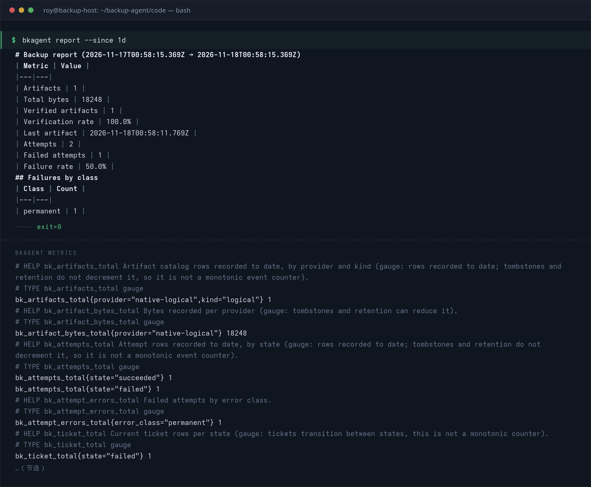
一处容易误读的行为：被门禁拒绝的恢复同样写入一条 Attempt（错误类 permanent），因此 report 的失败率包含「门禁拒绝」。失败率高不代表备份异常，应先查看 ## Failures by class。
08第 7 步：restore —— 三重门禁
逻辑恢复一律按破坏性操作处理：输入的 SQL 可能含 DROP，--clean 更会先清空目标库对象。门禁按顺序求值，任一条件不满足即拒绝，并打印下一条应执行的命令。
8.1第 1 道：--yes
bkagent restore --dsn 'postgres://postgres@127.0.0.1:55416/postgres' \
--input /var/backups/bk_tut.dump --database bk_tut_restore --create-databasebkagent: plan risk is destructive for target "127.0.0.1:55416/bk_tut_restore"; re-run with --yes to proceed计划本身声明了 risk: destructive，缺 --yes 直接拒绝。这一步不是提示语，是硬性检查：风险等级由 DESTRUCTIVE_PLAN_COMMANDS 决定，计划若低报风险会被判 risk-understated 并拒绝。
8.2第 2 道：资产必须已登记
加上 --yes 后，targetId 变成 127.0.0.1:55416/bk_tut_restore——注意不是来源库 bk_tut：
bkagent: no asset registered for target "127.0.0.1:55416/bk_tut_restore" in control database "/tmp/opencode/tutorial/run/control.db". Register it before destructive work:
bkagent asset-set --db /tmp/opencode/tutorial/run/control.db --target 127.0.0.1:55416/bk_tut_restore --engine postgres --environment <production|staging|development|test> --owner <owner> --criticality <critical|high|medium|low> --data-classification <public|internal|confidential|restricted> --rpo-minutes <n> --rto-minutes <n> [--protected]拒绝信息中包含修复命令，可直接复制执行。这里也是「环境」字段第一次产生实际后果的分岔点：登记为 production 会触发第 3 道门禁。
8.3第 3 道：生产目标需要双人复核
按提示把 bk_tut_restore 登记为 production 后重试：
bkagent asset-set --target 127.0.0.1:55416/bk_tut_restore --engine postgres \
--environment production --owner dba --criticality high \
--data-classification internal --rpo-minutes 1440 --rto-minutes 240bkagent: production-destructive plan on target "127.0.0.1:55416/bk_tut_restore" requires 2 distinct approvals; have 0.
digest: d6861131af1c512044d482270cf24a78e26016de757577832632eaf486600e2a
approve: bkagent approve --db … --target 127.0.0.1:55416/bk_tut_restore --digest d686… --approver <id>
inspect: bkagent approvals --db … --target 127.0.0.1:55416/bk_tut_restore --digest d686…三次拒绝都以退出码 2 结束，脚本里可以据此判断「被门禁挡住」而不是「执行失败」。

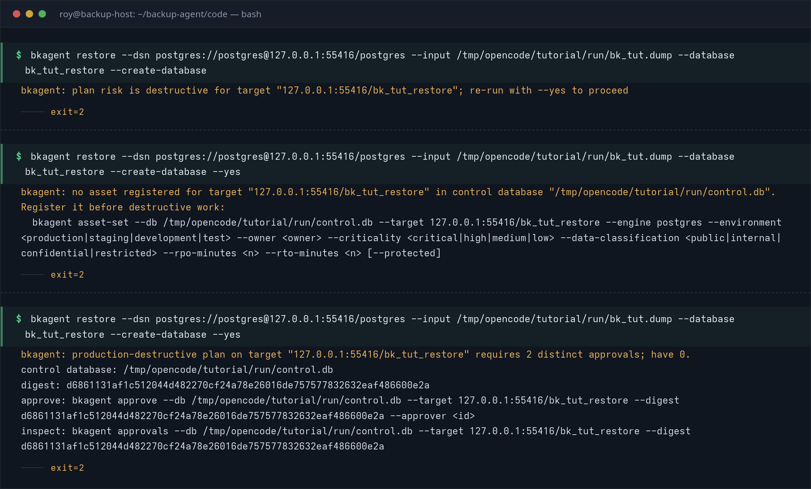
审批绑定的是 digest，不是目标名：digest 由操作内容（计划指纹、配置摘要）算出，改了输入文件或参数就要重新审批。审批窗口 60 分钟。
审批按操作系统身份去重，这是最容易被绕过的错觉：

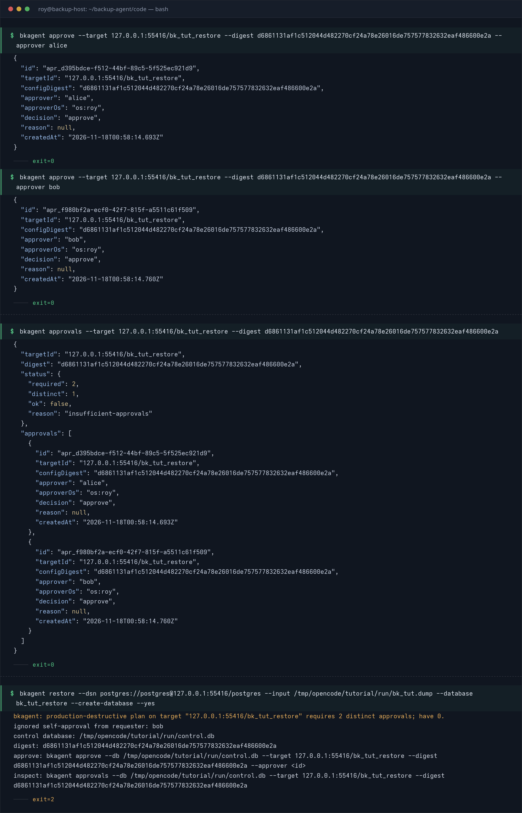
{
"targetId": "127.0.0.1:55416/bk_tut_restore",
"digest": "d6861131af1c512044d482270cf24a78e26016de757577832632eaf486600e2a",
"status": { "required": 2, "distinct": 1, "ok": false, "reason": "insufficient-approvals" },
"approvals": [
{ "approver": "alice", "approverOs": "os:roy", "decision": "approve" },
{ "approver": "bob", "approverOs": "os:roy", "decision": "approve" }
]
}两个标签、同一个 OS 用户，distinct 仍然是 1，门禁不放行；再次执行时连请求者自己的审批也会被忽略，并打印 ignored self-approval from requester: bob。要真正满足双人复核，必须由第二个操作系统用户执行 approve。
8.4一次通过
非生产目标只需要 --yes。登记一个 test 环境的目标后重试：
bkagent asset-set --target 127.0.0.1:55416/bk_tut_copy --engine postgres \
--environment test --owner dba --criticality medium \
--data-classification internal --rpo-minutes 2880 --rto-minutes 480
bkagent restore --dsn 'postgres://postgres@127.0.0.1:55416/postgres' \
--input /var/backups/bk_tut.dump --database bk_tut_copy --create-database --yes
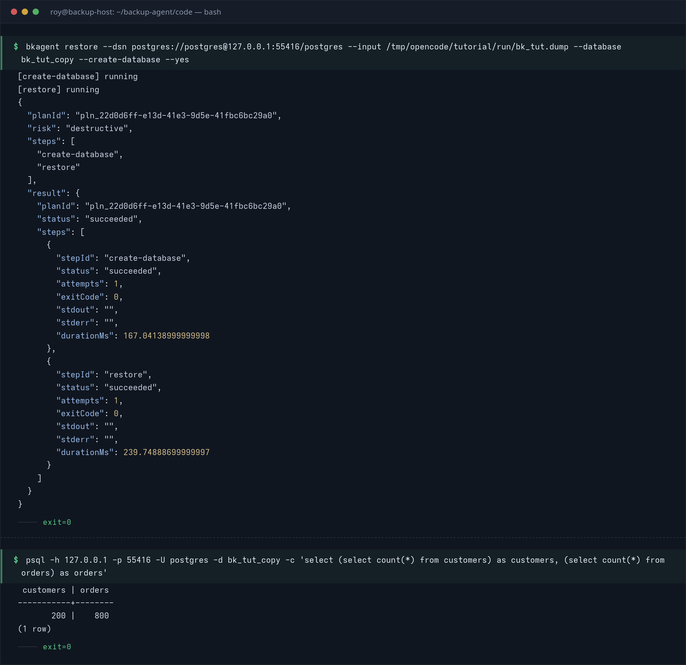
[create-database] running
[restore] running
{
"planId": "pln_22d0d6ff-e13d-41e3-9d5e-41fbc6bc29a0",
"risk": "destructive",
"steps": ["create-database", "restore"],
"result": { "status": "succeeded", ... }
}恢复命令成功不代表数据一致，需再核对行数：
psql -h 127.0.0.1 -p 55416 -U postgres -d bk_tut_copy \
-c 'select (select count(*) from customers) as customers, (select count(*) from orders) as orders' customers | orders
-----------+--------
200 | 800
(1 row)该人工核对与 verify 的职责重叠，但两者的校验对象不同：verify 校验的是备份文件能否恢复且一致，这一步校验的是这次恢复操作落到了正确的库。
拒绝信息与下一步，对照表：
| 现象 | 原因 | 下一步 |
|---|---|---|
plan risk is destructive … re-run with --yes | 缺 --yes | 加 --yes，先确认目标库名 |
no asset registered for target … | 目标未登记，或 host/port/库名不一致 | 按拒绝信息中的 asset-set 执行 |
requires 2 distinct approvals; have 0 | 生产目标，审批不足 | 按打印的 digest 让第二个 OS 用户 approve |
ignored self-approval from requester … | 同一 OS 用户重复审批 | 换第二个操作系统用户 |
config drift / 指纹失配 | 目标实例或配置在计划生成后发生变化 | 重新执行 inspect 确认身份，再重新发起 |
09观测：dashboard 与 watchdog
只读面板不连目标库，只读控制库：
bkagent dashboard --out /var/www/bkagent.html # 生成自包含 HTML
bkagent dashboard --serve --port 8787 # 只绑定 127.0.0.1
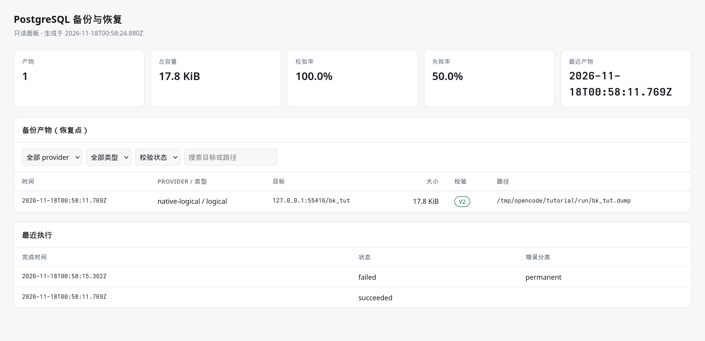
面板内容全部来自控制库，字段经 HTML 转义；--serve 仅绑定 127.0.0.1，要对外开放请自行套反向代理并加认证。
告警走 watchdog，按 P1–P4 阶梯评估，先做一次对账（启动时残留的 running 会被判 stalled）：
bkagent watchdog
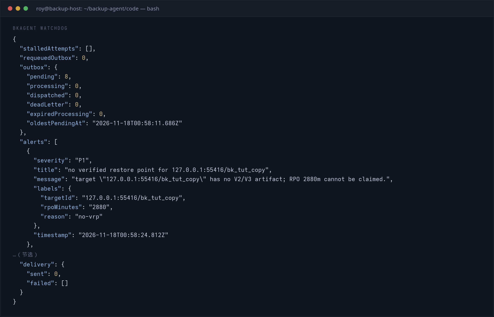
上述两条 P1 告警的成因是：bk_tut_restore 与 bk_tut_copy 被登记为需备份的资产，但没有 V2 产物，因此判定为 no-vrp。由此得到的约束是：恢复用的临时目标不应登记为长期资产，否则该目标会进入 RPO 统计范围。真实巡检里，watchdog 的输出适合直接接 BKAGENT_WEBHOOK_URL / SMTP，投递失败会留在 Outbox 里，用 outbox-dispatch 重投。
10进阶：三条继续往前的路
主线验证通过后，按目标从下列三条路径中选择一条继续，无需逐条阅读 36 条命令。
| 路线 | 入口 | 必须先满足 | 本教程状态 |
|---|---|---|---|
| 远端执行 | 目标类命令加 --transport ssh 或 --transport kubectl | --ssh-host + --known-hosts（强制 BatchMode=yes、StrictHostKeyChecking=yes），或 --kubectl-pod；凭据预置在目标机 | 未在本教程演示 |
| provider 链路 | pgbackrest-backup|restore|expire、walg-backup|restore|prune | 对应工具在 PATH 上且版本可探测 | 未演示，本机 providers 报 TOOL_MISSING |
| 智能体面 | packages/dsh-plugin、presets/pg-dba/、bkagent-mcp | pnpm build:cli 产出 dist/bkagent.mjs；安装脚本 scripts/install-dsh.sh | 已安装并通过预设加载验证（见 10.1） |
三条共同的硬约束：
- 远端传输不转发环境变量：带 env 的计划在执行前被拒绝，密码必须由目标机的
.pgpass/ peer / GSSAPI 提供。 - 远端产物的路径记为
<transport>:<path>，表示字节位于目标机、控制面无法读取，因此verify --input不能直接使用该路径。 - provider 的备份仓库归 provider 所有，保留操作仅能通过
pgbackrest expire/wal-g delete retain执行；bkagent 只做编排与台账。 - MCP 模式下破坏性工具失败关闭，默认不会因「智能体要求」而绕过门禁。
10.1把 bkagent 装成 dsh 插件
dsh 0.2.x 改了两处与本项目相关的机制：profile 由「有序的 bundle patch 层」组合，dsh plugin add 只负责把包装进 profile；预设不再是 $DSH_HOME/.agent-presets/ 下的目录，而是 bundle patch 里的一条 @deepseek-ai/dsh-agent-preset 行。仓库已经适配：packages/dsh-plugin/package.json 声明 dsh.bundle，packages/dsh-plugin/cordis.patch.yml 提供 pg-dba 预设。
dsh --version # 需要 0.2.x；本文验证于 0.2.2-rc.4
bash scripts/install-dsh.sh web # 或指定其他 profile 名脚本执行三个步骤：
pnpm build:cli、pnpm build:knowledge产出两个单文件包；var/knowledge.sqlite不存在时重建知识索引；dsh plugin --profile web add link:<repo>/packages/dsh-plugin；插件声明了dsh.bundle，add会同时把它写入 profile 的 bundle 列表。
预设随补丁层挂载，不再复制目录。
以下两项验证缺一不可：
dsh --profile web --dump-config | grep -A2 preset-pg-dba # 补丁层是否生效
dsh --profile web --no-open # 设置 → Agent 预设
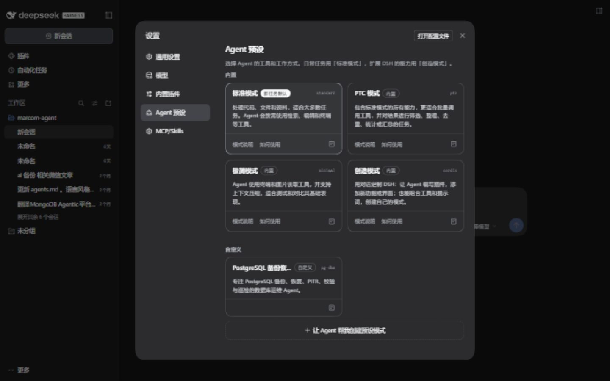
设置页出现「自定义 / PostgreSQL 备份恢复」，且没有「加载失败」，说明预设内每一行（persona、@backup-agent/dsh-plugin、技能目录）都已激活；此后新建会话并选用该预设，即可使用 pg_inspect、pg_backup、pg_restore、pg_pitr、pg_verify、pg_catalog、pg_report 与 kb_search，以及闭环工具 bk_goal、bk_step_run、bk_remediate、bk_recall。
安装过程中实际遇到的三个问题：
| 现象 | 原因 | 处理 |
|---|---|---|
装完插件页有 @backup-agent/dsh-plugin，但预设列表里没有 | 包没有声明 dsh.bundle，add 只把它当普通依赖 | 在 package.json 加 dsh.bundle.patch，重新 remove 后 add |
预设显示「加载失败」，提示 $.prefix missing required value | 0.2.x 的 persona 行要求 prefix，0.1.x 的 text 不再接受 | 改写为 prefix；{{…}} 变量必须是已注册的，否则同样报错 |
手工把预设目录复制到 ~/.dsh/.agent-presets/ 无效 | 0.2.x 不再读取该目录 | 改为 bundle patch 的 @deepseek-ai/dsh-agent-preset 行 |
不使用 dsh 时，可继续使用 MCP 入口：
BKAGENT_CLI=$PWD/dist/bkagent.mjs node packages/dsh-plugin/mcp.jsMCP 没有审批通道，pg_restore / pg_pitr 一律失败关闭，返回 isError 并提示改用 preset 或 CLI。
11出问题时的查找顺序
| 现象 | 原因 | 处理 |
|---|---|---|
no such table: … 启动即报 | 控制库已存在，但迁移目录缺失（单文件安装常见） | 设 BKAGENT_MIGRATIONS 指向包内 dist/migrations，或在旧控制库上重新执行迁移 |
no asset registered for target … | 目标未登记，或 host / port / 库名与 targetId 不一致 | 按拒绝信息中的 asset-set 执行，并统一使用 127.0.0.1 |
TOOL_MISSING(pgbackrest) | 工具不在 PATH 上 | 安装或改走 native-logical，不要期待自动降级 |
connection refused / 退出码 3 | 连接串、端口或认证失败 | 先用 psql 同参数手连一次，再回到 bkagent |
pg_verifybackup 找不到 | 位于 /usr/lib/postgresql/<ver>/bin，默认不在 PATH | 加入 PATH，或改用 --format tar 并接受 V0 缺失 |
dashboard --serve 打不开 | 只绑定 127.0.0.1 | 本机访问，或自建反向代理并加认证 |
排查顺序建议固定为：inspect → providers → trace --plan → catalog → watchdog。trace 用 --ticket 或 --plan 定位单次执行，可查看每一步的 argv 与退出码。
12附录：主线命令卡
# 0. 环境
export BKAGENT_DSN='postgres://<user>@127.0.0.1:5432/<db>'
export BKAGENT_DB=.bkagent/control.db # 缺省值，可省略
# 1. 探测
bkagent inspect --format text
bkagent providers --format text
# 2. 建档（targetId 必须是 <host>:<port>/<database>）
bkagent asset-set --target 127.0.0.1:5432/<db> --engine postgres \
--environment production --owner dba --criticality high \
--data-classification internal --rpo-minutes 1440 --rto-minutes 240
# 3. 备份与校验
bkagent backup --database <db> --out /var/backups/<db>.dump --format custom
bkagent verify --input /var/backups/<db>.dump --database <db>
# 4. 台账
bkagent catalog
bkagent asset-rpo
bkagent report --since 7d
bkagent metrics
# 5. 恢复（先确认目标库名，再决定环境）
bkagent asset-set --target 127.0.0.1:5432/<db>_copy --engine postgres \
--environment test --owner dba --criticality medium \
--data-classification internal --rpo-minutes 2880 --rto-minutes 480
bkagent restore --dsn 'postgres://<user>@127.0.0.1:5432/postgres' \
--input /var/backups/<db>.dump --database <db>_copy --create-database --yes
# 6. 观测
bkagent watchdog
bkagent dashboard --out /var/www/bkagent.html
# 7. 多步任务（可选）：目标闭环
bkagent goal add --target 127.0.0.1:5432/<db> \
--intent '备份并校验 <db> 库' \
--steps-json '[{"intent":"探测","action":{"command":"inspect","args":[]}},
{"intent":"备份","action":{"command":"backup","args":["--database","<db>","--out","/var/backups/<db>.dump","--format","custom"]},"dependsOn":[1]},
{"intent":"校验","action":{"command":"verify","args":["--input","/var/backups/<db>.dump","--database","<db>"]},"dependsOn":[2]}]'
bkagent goal run --goal <goalId> # 逐步执行；失败即停并返回诊断
bkagent goal diagnose --step <stepId> # 失败签名 + 允许的修复候选
bkagent goal remediate --step <stepId> --kind replan --action-json '{…}'
bkagent memory search --target 127.0.0.1:5432/<db>13这份教程验证到什么程度
如实说明边界，避免将「未执行」记为「已通过」：
| 内容 | 状态 |
|---|---|
inspect、providers、asset-set、backup --mode logical、verify、catalog、asset-rpo、report、metrics、restore（含三次门禁拒绝与一次通过）、approve、approvals、watchdog、dashboard --out | 在本地 PostgreSQL 16.15 上实际执行，输出为真实回显 |
goal add / goal run / goal diagnose / goal remediate / memory search | 在本地 PostgreSQL 16.15 上实际执行：两步目标成功、permanent 失败 → replan → 成功、未审批破坏性步骤在派发前被拒。未经模型驱动——闭环的工具轨迹没有 E2E 覆盖 |
dsh 0.2.2-rc.4 安装、插件挂载与 pg-dba 预设 | 已执行：--dump-config 出现 preset-pg-dba，设置页显示「自定义 / PostgreSQL 备份恢复」且无加载失败；未用模型实际发起一次会话 |
| 双人复核的通过态 | 未演示：需要第二个操作系统用户执行 approve，本教程只展示 distinct: 1 的拒绝与自审被忽略 |
--transport ssh / --transport kubectl、物理备份、PITR、pgbackrest-*、walg-*、retain、MCP 入口 | 未执行，只给入口与前置条件 |
| V3 校验等级 | 未实现 |
相关的离线验收（E-08）与真实模型端到端（E-09）尚未纳入发布准入检查，当前完成度以 status.md 为准。